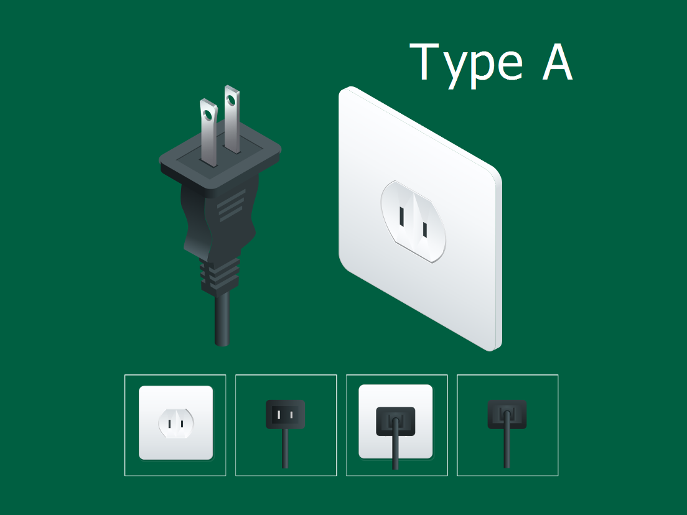
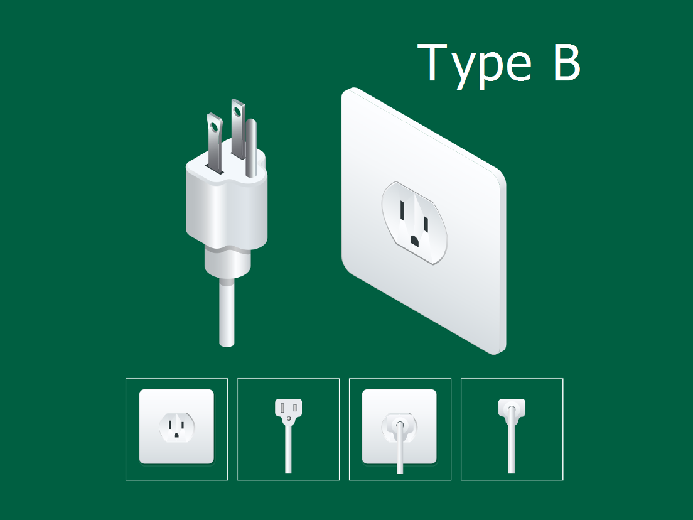
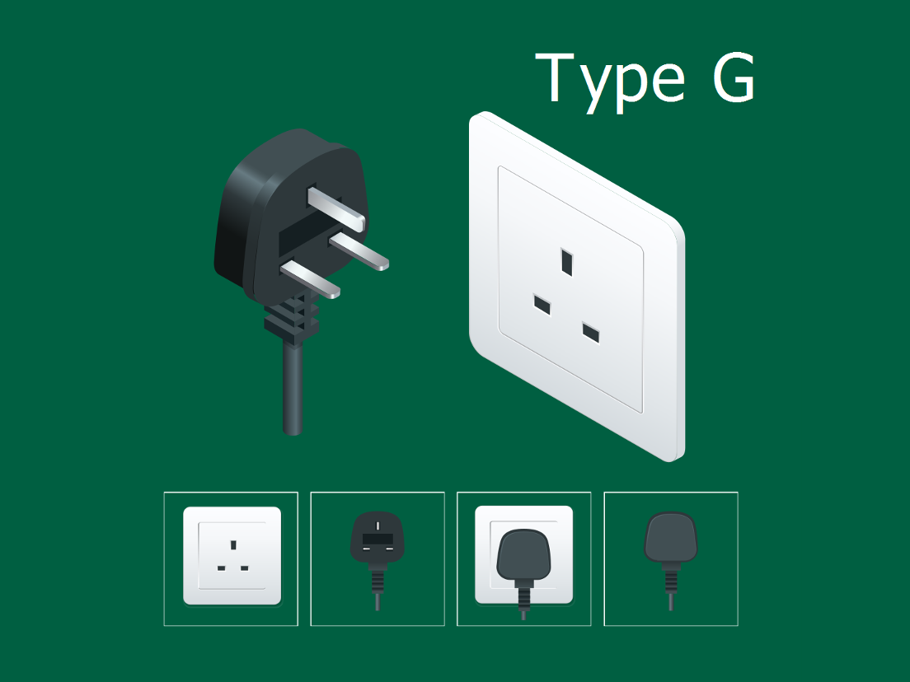
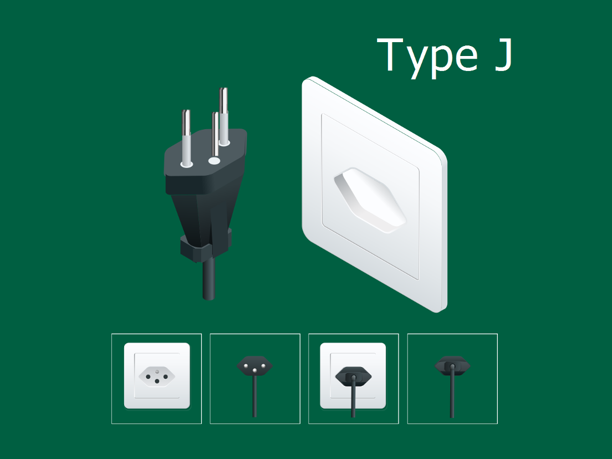

Type A: North American Un-Grounded
The standard ungrounded utility socket featuring two thin parallel slots. Designed strictly for low-power, double-insulated small electronics and phone chargers across North America and Japan.

Type B: North American Grounded
An upgraded grounded outlet incorporating a U-shaped round earth pin. Provides essential surge protection and grounding for heavy computer hardware, gaming rigs, and kitchen appliances.

Type C: Universal Europlug Outlet
The universal two-pin ungrounded wall interface found across mainland Europe. Compact and versatile, it accommodates low-power consumer electronics running on high voltage lines.

Type F: German Schuko System
Heavy-duty, recessed round socket fitted with side-earthing spring clips instead of a center pin. Built for robust insulation and high-wattage German and Northern European home machinery.

Type G: British Standard Safety Outlet
Engineered for maximum safety with child-proof internal shutters that open only when the longer top earth pin enters. Every plug features an internal fuse for local circuit protection.

Type J: Swiss Hexagonal Interface
A sleek, space-saving hexagonal socket standard exclusive to Switzerland. It seamlessly accepts standard Type C Europlugs while offering grounded protection through a centralized offset pin.
Global Electrical Voltage & Grounding Matrix
| Socket Type & Standard | Dominant Geographic Regions | Earthing / Grounding Safety | Standard Mains Voltage & Frequency |
|---|---|---|---|
| Type A & Type B | North America, Central America, Japan, Taiwan | Type A (Ungrounded) / Type B (Grounded) | 100V – 127V / 60 Hz |
| Type C, F, G & J | Europe, United Kingdom, UAE, Singapore, Switzerland | Type C (Ungrounded) / F, G & J (Grounded) | 220V – 240V / 50 Hz |